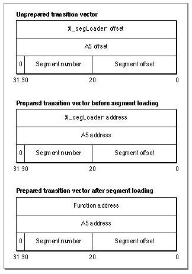

Legacy Document
Important: The information in this document is obsolete and should not be used for new development.
Important: The information in this document is obsolete and should not be used for new development.


Transition Vectors and the Transition Vector Table
The transition vector table resides in the direct data world (the A5 world in classic 68K) above the jump table. It contains a transition vector for every exported routine and every routine whose address is accessed in any way. The transition vectors contain the entry point address for the desired routine and the value to be placed in the A5 base register when the routine executes. Figure 9-3 shows the structure of an application transition vector.Figure 9-3 An application transition vector

The Code Fragment Manager sets the
%_segLoaderaddress and A5 address portions of the transition vector at preparation time. (See "The 'rseg' 1 Resource" (page 9-10) for more information about the%_segLoaderroutine.) The application transition vector is larger than the corresponding shared library transition vector (12 bytes versus 8 bytes) because it needs additional segment information to properly address routines in a segmented application.The segment offset field in a transition vector contains a word (2 byte) offset. This differs from a jump table entry's segment offset field, which contains a byte offset.